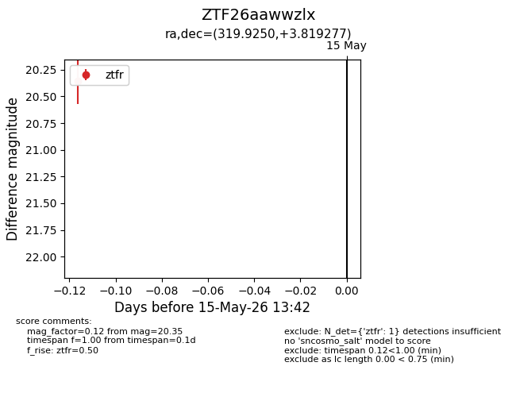
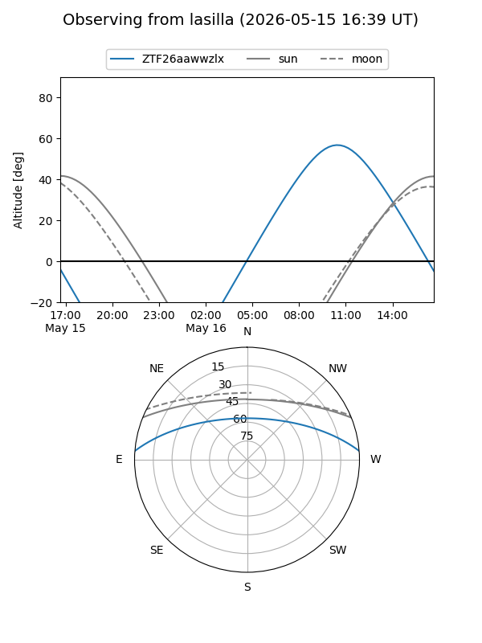
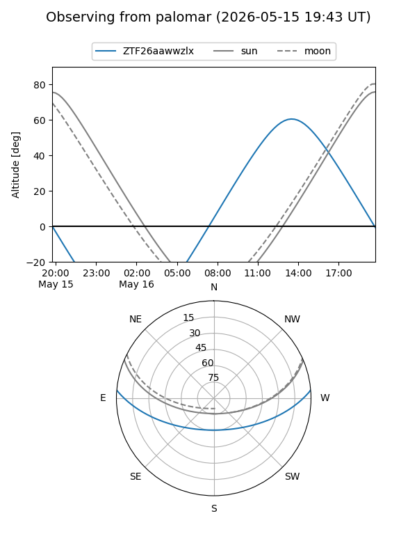

ZTF26aawwzlx
Target ZTF26aawwzlx at 2026-05-15 13:44
Aliases and brokers:
FINK: link
Lasair: link
ALeRCE: link
alt names
ZTF26aawwzlx (ztf,fink_ztf)
Coordinates:
equatorial (ra, dec) = 319.9250,+3.81928
equatorial (HMS+DMS) = 21:19:42.00,+03:49:09.40
galactic (l, b) = (55.6600,-30.32182)
Flags:
Photometry:
last ztfr=20.35
1 ztfr detections
Lightcurve

Visibility


Additional plots